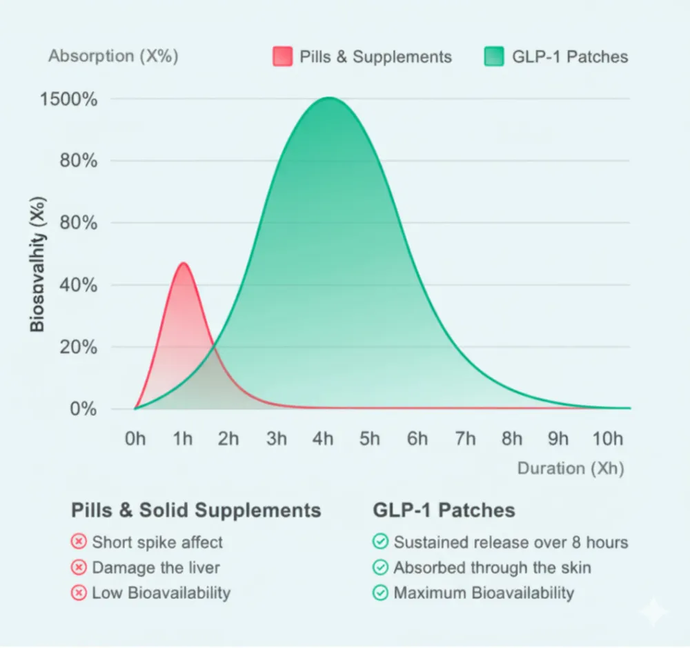
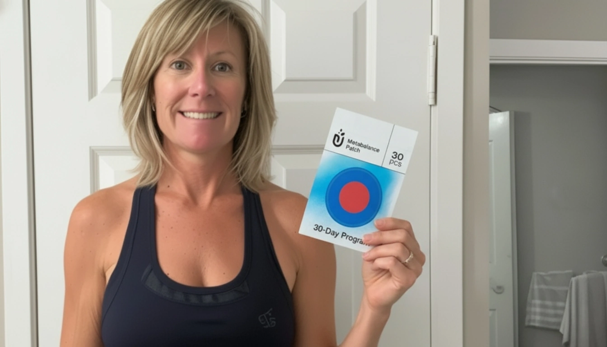
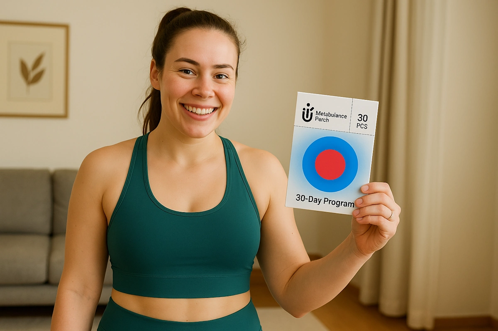
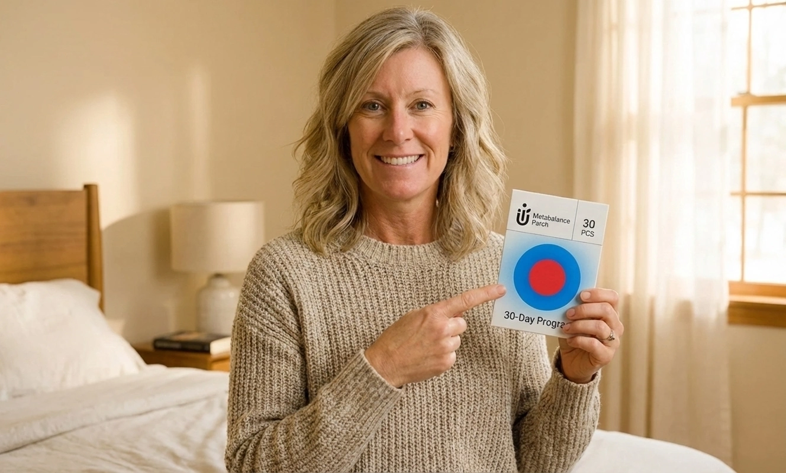

How This Unusual Skin-Applied Habit Helped Me Feel More Comfortable in My Body

My name is Sarah M., I’m 54, and I live in Denver with my husband and our two teens. I’m just a regular working mom who wanted to feel more confident and balanced again.
When My World Fell Apart
For years, I struggled with feeling sluggish and "heavy." I tried every diet, every trendy supplement, and spent a fortune on gym memberships I was too tired to use. It felt like a never-ending cycle of disappointment.

After I turned 40, things changed. My energy dipped, my routines didn’t feel as effective as they used to, and my body didn’t respond the same way it once had. I found myself reaching for bigger clothing sizes and avoiding the mirror whenever possible. The moment that really hit me came last spring while I was out shopping with my daughter for her graduation dress. I tried on something new, and it didn’t even come close to zipping. Under those harsh lights, I barely recognized myself. Later, my daughter told me gently, “Mom, you just haven’t seemed like yourself for a while.” That stayed with me.
Everything Changed After This Surprising Discovery

My turning point came at a family barbecue when I barely recognized my sister-in-law, Michelle. She looked incredible — glowing, confident, and easily 30+ pounds lighter.
“What on earth are you doing?” I asked.
She smiled and said, “Honestly? It’s these Purisaki Patches I put on every morning.” She even showed me her before-and-after photos, and the difference was undeniable. She explained that instead of going through the stomach, Purisaki delivers plant extracts through the skin for smoother absorption.
I was intrigued... but still skeptical.
Three days later, I met my old college roommate, Lisa Chen, who happened to be in town for a medical conference. When I mentioned Michelle’s transformation, Lisa nodded immediately.
“You’re describing metabolic resistance,” she said. “After 35, a lot of women’s bodies respond differently to traditional weight-loss methods. The digestive system gets overwhelmed, and it stops absorbing key nutrients efficiently.”

She explained that new research suggests transdermal delivery — like the approach Purisaki uses — may offer better ingredient uptake than oral supplements.
“Your skin has direct access to your bloodstream,” she said. “Some early studies show these kinds of ingredients may work more effectively this way.”
Then she reached into her bag, laughed, and said,
“I actually picked up a few samples of the Purisaki Patches at the conference. A lot of scientists were talking about them. I thought you might want to try.”
I left that café with a little pack of Purisaki Patches... and a tiny bit of hope I hadn’t felt in years.
How It Actually Works
Once I got home with those sample Purisaki Patches, I finally understood why Michelle’s results made so much sense. Purisaki delivers its ingredients directly through the skin — giving them a more direct path into the bloodstream.
Each Purisaki Patch includes a blend of naturally derived ingredients often associated with metabolic support, including:
✅ Fucoxanthin – a unique compound from seaweed often linked to supporting stubborn midsection areas
✅ Green Tea Extract – commonly associated with energy and metabolic balance
✅ African Mango Seed – traditionally used for appetite support
✅ Pomegranate Oil – known for its antioxidant and wellness properties

Because the ingredients bypass the gut, the support feels steadier and gentler throughout the day — no jitters, no sudden crashes, just more balanced energy and calmer cravings.
Here are a few things I personally appreciated about using the patch:
✅ Works quietly in the background during your day
✅ Helps keep cravings in check
✅ Uses a skin-based delivery system
✅ Doesn’t require intense diets or complicated routines
And the best part? It takes ten seconds to use.
Just peel, stick, and go. You wear the patch for about 8 hours, then remove it — like flipping a simple “on/off” switch. No reminders, no schedules, and no lifestyle overhaul required.
I Took Those Patches Home & Here's What Happened Next

I’ll be honest — I was skeptical at first. The patches looked a little odd to me, and I wasn’t expecting much. But I was curious enough to give them a fair try. What happened over the next few weeks wasn’t dramatic or overnight... but it was steady, noticeable, and honestly encouraging.
Week 1: The first thing I noticed wasn’t weight loss — it was my sleep. I wasn’t waking up in the middle of the night anymore, and my cravings felt easier to manage. The scale barely moved (maybe half a kilo), but the change in how I felt was enough to make me want to keep going.
Week 2: This week felt more balanced. My appetite steadied, I wasn’t prowling the kitchen at 10 PM, and my energy dips weren’t as sharp. By the end of Week 2, I was down roughly 1.5–2 kg in total. Nothing extreme — just slow, realistic progress.
Week 4: Week 3 was a bit slower, but by Week 4 everything evened out again. My cravings eased, the afternoon slump had almost disappeared, and people started telling me I looked “rested.” By this point, I was down about 3.5–4 kg. My clothes fit more comfortably, and it felt like my body was finally cooperating with me instead of fighting back.
Week 6: The next couple of weeks followed the same gentle rhythm — some days slower, some days more encouraging. By Week 6, my total loss was right around 5.5–6 kg. The most surprising part? It didn’t feel forced. No extreme dieting, no harsh routines — just a small daily habit that quietly supported me in the background.
Real People, Real Results
After I shared my experience with the Purisaki patches, my inbox exploded. What shocked me most was how many women were quietly struggling with the same stubborn weight, cravings, and energy crashes — and how many of them felt genuine changes after trying the patches for themselves.

"I walk daily, but after 45 I felt like my body wasn’t responding the same way. Adding this patch has helped me feel more ‘in sync’ again. My clothes fit better, and I feel more confident."

“My biggest challenge was the 3 PM slump. I’d grab sugar every time. With these patches, my energy feels steadier throughout the day.”

“This format was perfect for me. Within a few days, I felt less bloated and more comfortable.”
If You're Reading This, Pay Close Attention...
If you ask me, finally feeling in control of your cravings, waking up with steady energy, and watching your clothes fit more comfortably again? That’s truly priceless.
So if you’ve been struggling with stubborn weight, slow metabolism, or constant energy dips... Purisaki is absolutely worth considering.
Right now, the makers are offering an exclusive 70% discount for readers of this page — but only while supplies last. You’ll also get:
✅ Free shipping
✅ 60-day satisfaction guarantee
✅ Fresh production batches with verified-quality seals
In my experience, taking back control of your body doesn’t have to feel like punishment. Sometimes, the smallest daily habit can shift everything.
If you’re ready to feel lighter, more balanced, and more like yourself again... Purisaki could be the gentle support you’ve been searching for.
Ready to Start Your Own Transformation? Begin with Purisaki!Limited Time Offer — and an Important Warning

Purisaki has been gaining attention quickly — and with the current 70% discount, stock has been running out faster than expected. Thousands have already tried it to support stubborn weight, cravings, and low energy, and new batches often sell out as soon as they’re released.
But with all this demand, I also started hearing some unsettling stories. Women were buying “similar” patches from random websites and seeing zero results — or worse, dealing with irritation from cheap knockoffs using unknown fillers and outdated delivery systems.
That’s why the company now uses official holographic seals and batch verification to ensure authenticity.
If you decide to try Purisaki, make sure you’re getting the real thing — only from the official website while the 70% discount is still active. Supplies are limited, and once this batch is gone, the offer ends.
My Final Words
Six months ago, I was hiding from mirrors and avoiding social events whenever I could. I felt invisible, exhausted, and stuck in a body that didn’t feel like mine anymore.
Now, after making Purisaki Patches part of my daily routine, I’m finally feeling comfortable in my skin again. I’m back in a size 8 dress I haven’t worn since my twenties, my energy feels steadier, and I actually look forward to getting dressed in the morning.
Because of high demand, Purisaki stock tends to sell out quickly — and the special pricing offered to readers of this page is only available while supplies last.
If you're ready for a fresh start, your own change could begin as soon as tomorrow.
UPDATE: We have just received word that due to a viral social media post, the current batch of Purisaki is selling out faster than anticipated. The 70% discount link below is currently active, but it may expire within the next few hours. If you click the link and see a “Sold Out” message, please check back next month. If you see the order form, we highly recommend securing your bundle immediately before inventory is depleted.